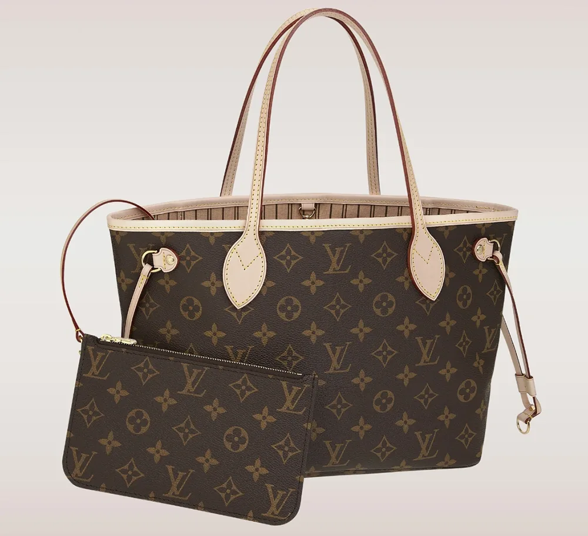
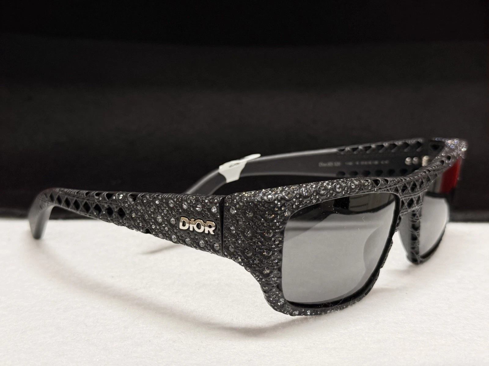
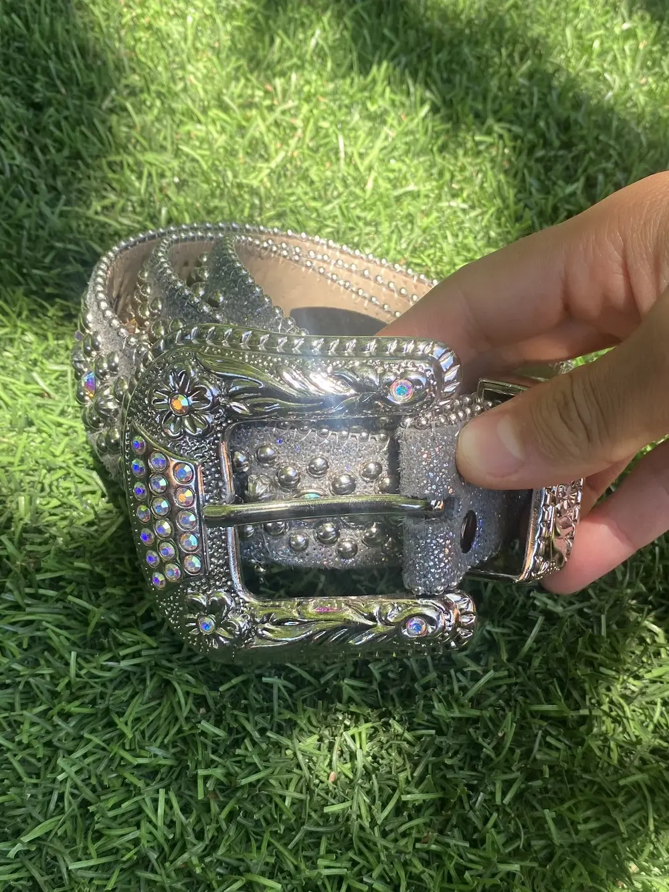
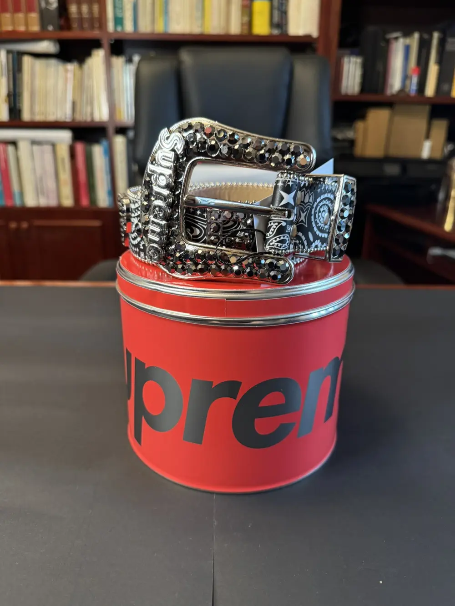
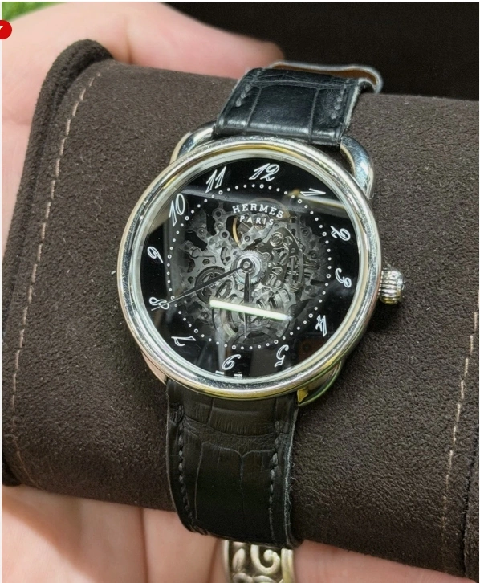
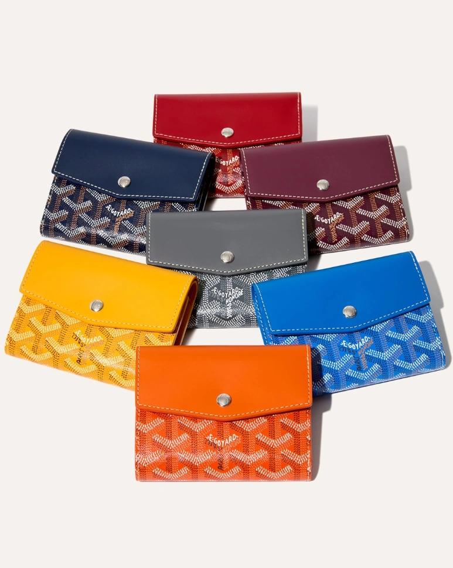
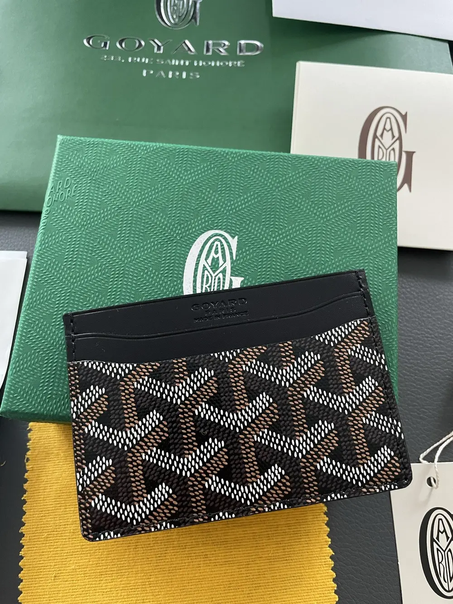
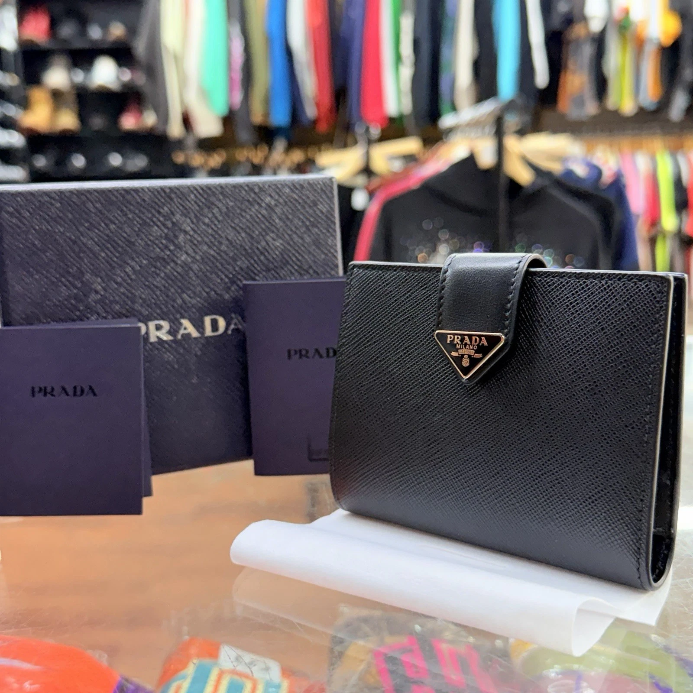
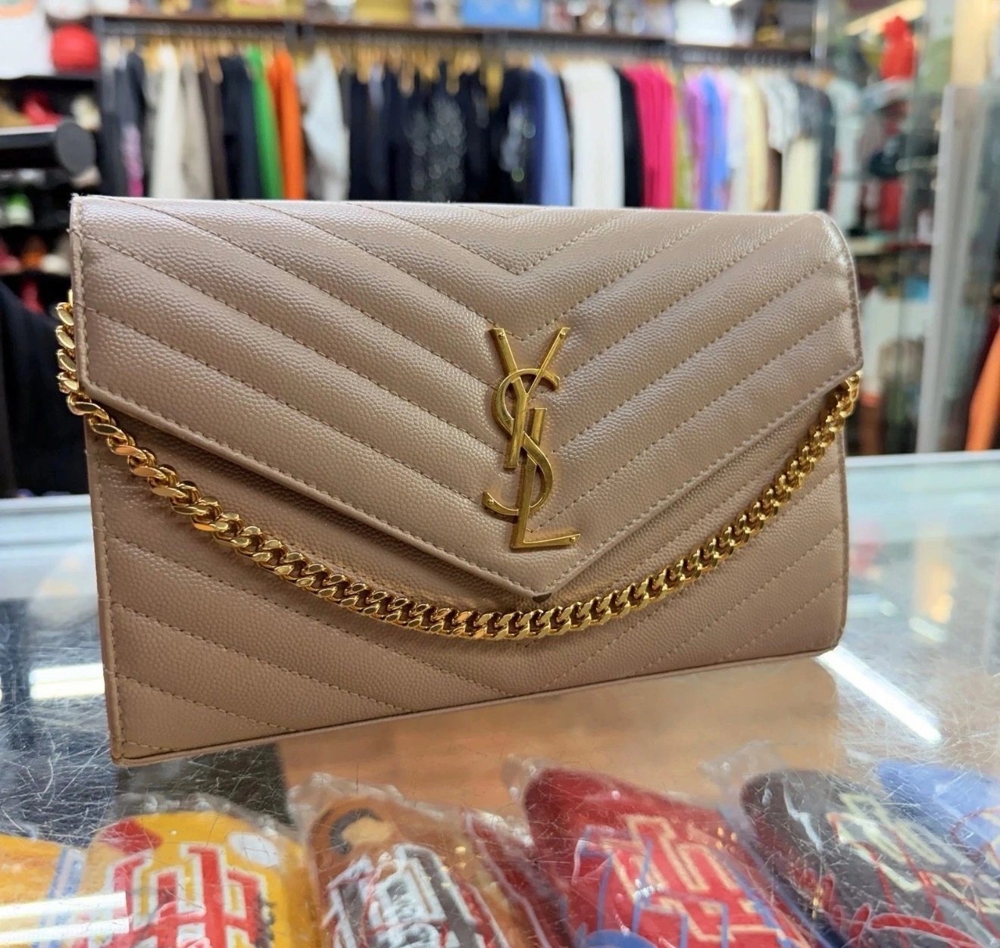
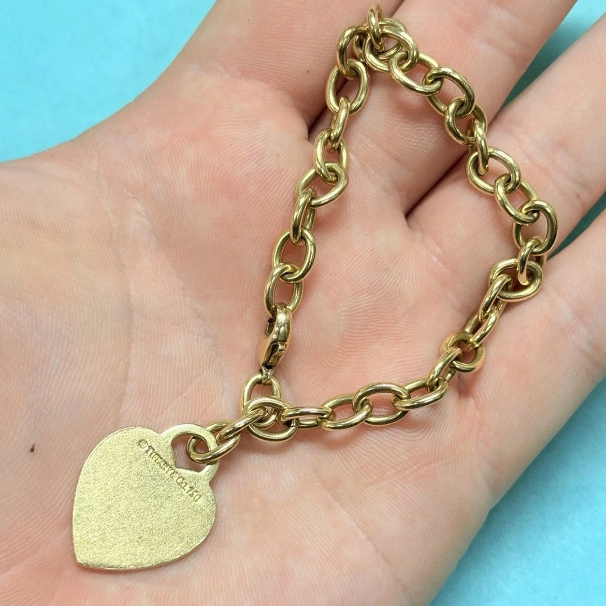

Home › Accessories
What We Buy
Sell Accessories to East Village Buyers
We're a real shop at 39 Avenue A — walk in with a single belt or a stack of wallets from your closet. We inspect authenticity and condition at the counter, explain the offer plainly, and pay cash the same day if you like the number. No consignment wait, no mail-in revised offers, no pressure.

 Gucci · NYC
Gucci · 39 Avenue A
Gucci · NYC
Gucci · 39 Avenue A
We Buy & Sell Gucci Accessories in NYC
GG belts, Marmont wallets, card holders, key pouches, and sunglasses.
Gucci accessories move fast in NYC resale — from classic GG belts to Marmont wallets and Ophidia card holders. We buy and sell authenticated Gucci SLG in good to excellent condition with same-day cash.
What Gucci accessories do you buy?
We buy authentic Gucci wallets, belts, sunglasses, jewelry, scarves, card holders, key pouches, watches, and other luxury Gucci accessories.
How much is my Gucci accessory worth?
The value depends on authenticity, condition, rarity, style, market demand, and whether original packaging or receipts are included.
Do I need a receipt to sell my Gucci accessory?
No. Receipts are helpful but not required to receive an evaluation or offer.
Do you buy vintage Gucci accessories?
Yes. We purchase both vintage and modern Gucci accessories, including discontinued and collectible pieces.
Do you buy damaged Gucci accessories?
Yes. We may still purchase Gucci accessories with signs of wear, scratches, fading, or minor damage depending on the item.
How do you authenticate Gucci accessories?
Our luxury buyers inspect materials, hardware, serial numbers, craftsmanship, logos, and other authentication features before making an offer.
How long does the selling process take?
Most evaluations can be completed quickly, and qualified sellers may receive an offer the same day.
Is there any obligation to sell after receiving an offer?
No. Our evaluations are free, and you are never obligated to accept an offer.
Do you sell authentic Gucci accessories?
Yes. Every Gucci accessory we sell is carefully inspected and verified for authenticity.
Why buy pre-owned Gucci accessories?
Pre-owned Gucci accessories can offer substantial savings while providing access to rare, vintage, discontinued, and limited-edition pieces.
Do your Gucci accessories come with original packaging?
Some items may include original boxes, dust bags, receipts, authenticity cards, or other accessories when available.
Do Gucci accessories hold their value?
Many Gucci accessories retain strong resale value, especially iconic styles, limited editions, and sought-after collections.
What affects the resale value of Gucci accessories?
Factors include condition, authenticity, rarity, age, style popularity, market demand, and the presence of original packaging or documentation.
Can I sell multiple Gucci accessories at once?
Yes. We can evaluate individual items or entire Gucci collections during a single appointment.
Why choose East Village Buyers for Gucci accessories?
We offer professional luxury authentication, competitive offers, fast evaluations, and a trusted buying and selling experience in NYC.

Louis Vuitton · NYC
LV · 39 Avenue A
We Buy & Sell Louis Vuitton Accessories in NYC
Monogram and Damier wallets, belts, key pouches, and agenda covers.
Louis Vuitton small leather goods are a staple of NYC resale. We buy authenticated LV wallets, card holders, belts, and pouches — monogram, Damier, and seasonal canvas when condition is right.
What Louis Vuitton accessories do you buy?
We buy authentic Louis Vuitton wallets, belts, sunglasses, jewelry, card holders, key pouches, scarves, travel accessories, and other luxury LV items.
How much is my Louis Vuitton accessory worth?
Value depends on authenticity, condition, rarity, style, market demand, and whether original packaging or receipts are included.
Do I need a receipt to sell my Louis Vuitton accessory?
No. While receipts and original packaging can help support value, they are not required.
Do you buy vintage Louis Vuitton accessories?
Yes. We purchase both vintage and modern Louis Vuitton accessories, including discontinued and collectible pieces.
Do you buy damaged Louis Vuitton accessories?
Yes. We may still purchase items showing wear, scratches, fading, or minor damage depending on their overall value.
How do you authenticate Louis Vuitton accessories?
Our luxury buyers examine materials, stitching, hardware, date codes, craftsmanship, and other authenticity markers.
How long does the selling process take?
Most evaluations can be completed quickly, and qualified sellers may receive an offer the same day.
Is there any obligation to sell after receiving an offer?
No. All evaluations are free, and you are never obligated to accept an offer.
Do you sell authentic Louis Vuitton accessories?
Yes. Every Louis Vuitton accessory we sell is carefully inspected and verified for authenticity.
Why buy pre-owned Louis Vuitton accessories?
Pre-owned Louis Vuitton pieces can offer significant savings while providing access to rare, discontinued, and hard-to-find styles.
Do your Louis Vuitton accessories come with original packaging?
Some items may include original boxes, dust bags, receipts, or other accessories when available.
Do Louis Vuitton accessories hold their value?
Many Louis Vuitton accessories retain strong resale value, especially popular styles, limited editions, and discontinued pieces.
What affects the resale value of Louis Vuitton accessories?
Condition, authenticity, rarity, age, style popularity, market demand, and included accessories all affect resale value.
Can I sell multiple Louis Vuitton accessories at once?
Yes. We can evaluate individual items or entire collections during a single appointment.
Why choose East Village Buyers for Louis Vuitton accessories?
We provide professional luxury authentication, competitive offers, fast evaluations, and a trusted buying and selling experience in NYC.

Dior · NYC
Dior · 39 Avenue A
We Buy & Sell Dior Accessories in NYC
Oblique wallets, Saddle card holders, belts, and Dior SLG.
Dior accessories — Oblique canvas wallets, Saddle pouches, and cannage leather card holders — have steady demand in the NYC market. We buy and sell authenticated pieces in good condition.
Selling Dior Accessories FAQs
What Dior accessories do you buy?
We buy a wide range of authentic Dior accessories, including handbags, wallets, belts, sunglasses, scarves, jewelry, card holders, key pouches, and other luxury Dior items in new or pre-owned condition.
Do you buy vintage Dior accessories?
Yes. We purchase both modern and vintage Dior accessories. Limited-edition, discontinued, and collectible pieces may qualify for higher offers depending on demand and condition.
How much is my Dior accessory worth?
The value depends on factors such as authenticity, condition, age, rarity, style, market demand, and whether original packaging, receipts, or certificates are included.
Do I need a receipt to sell my Dior accessory?
No. While receipts and proof of purchase can help support value and authenticity, they are not required in many cases.
Do you buy damaged Dior accessories?
Yes. We may still purchase Dior accessories with signs of wear, scratches, stains, missing components, or minor damage, depending on the item.
How do you authenticate Dior accessories?
Our experienced luxury buyers carefully inspect materials, hardware, serial markings, craftsmanship, and other authentication features before making an offer.
Can I sell Dior sunglasses?
Yes. We buy authentic Dior sunglasses in various styles, including both current and discontinued collections.
Do you buy Dior jewelry?
Absolutely. We purchase authentic Dior necklaces, bracelets, earrings, rings, brooches, and other designer jewelry pieces.
How long does the selling process take?
Most evaluations can be completed quickly, and qualified sellers may receive an offer the same day.
Is there any obligation to sell after receiving an offer?
No. Our evaluations are free, and you are under no obligation to accept an offer.
Buying Dior Accessories FAQs
Do you sell authentic Dior accessories?
Yes. All Dior accessories offered for sale are carefully inspected for authenticity before being made available to customers.
Can I buy pre-owned Dior accessories?
Yes. We carry a selection of pre-owned Dior accessories that offer luxury quality at more affordable prices than retail.
Why buy pre-owned Dior accessories?
Buying pre-owned Dior pieces can provide significant savings while giving you access to rare, discontinued, and hard-to-find items.
Do your Dior accessories come with original packaging?
Some items may include original boxes, dust bags, receipts, or authenticity cards when available.
Are your Dior accessories inspected before sale?
Yes. Every item undergoes a detailed inspection process to verify authenticity and assess condition.
Do you carry limited-edition Dior accessories?
Inventory changes frequently, but we occasionally receive rare, collectible, and limited-edition Dior pieces.
Can I reserve a Dior accessory before visiting?
Please contact us to inquire about current availability and reservation options.
Do you offer competitive pricing on Dior accessories?
Yes. We strive to offer fair market pricing based on current luxury resale values and item condition.
How often do you get new Dior inventory?
Our inventory changes regularly as customers sell luxury accessories daily.
Why choose East Village Buyers for Dior accessories?
We offer professional evaluations, competitive offers, fast transactions, luxury authentication expertise, and a trusted buying and selling experience in NYC.
Ferragamo · NYC
Ferragamo · 39 Avenue A
We Buy & Sell Ferragamo Accessories in NYC
Gancini belts, leather wallets, and classic Ferragamo SLG.
Ferragamo is known for belts and refined leather goods. We buy authenticated Gancini belts, wallets, and small leather pieces when hardware and leather are in good shape.
What Ferragamo accessories do you buy?
We buy authentic Ferragamo belts, wallets, sunglasses, scarves, jewelry, ties, watches, card holders, and other luxury Ferragamo accessories.
How much is my Ferragamo accessory worth?
The value depends on authenticity, condition, rarity, style, market demand, and whether original packaging or receipts are included.
Do I need a receipt to sell my Ferragamo accessory?
No. While receipts and original packaging can help support value, they are not required.
Do you buy vintage Ferragamo accessories?
Yes. We purchase both vintage and modern Ferragamo accessories, including discontinued and collectible pieces.
Do you buy damaged Ferragamo accessories?
Yes. We may still purchase Ferragamo accessories with signs of wear, scratches, fading, or minor damage depending on the item.
How do you authenticate Ferragamo accessories?
Our luxury buyers inspect materials, hardware, serial markings, craftsmanship, logos, and other authentication features before making an offer.
How long does the selling process take?
Most evaluations can be completed quickly, and qualified sellers may receive an offer the same day.
Is there any obligation to sell after receiving an offer?
No. All evaluations are free, and you are never obligated to accept an offer.
Do you sell authentic Ferragamo accessories?
Yes. Every Ferragamo accessory we sell is carefully inspected and verified for authenticity.
Why buy pre-owned Ferragamo accessories?
Pre-owned Ferragamo accessories offer excellent value and can provide access to discontinued, vintage, and hard-to-find luxury pieces.
Do your Ferragamo accessories come with original packaging?
Some items may include original boxes, dust bags, receipts, authenticity cards, or other accessories when available.
Do Ferragamo accessories hold their value?
Many Ferragamo accessories maintain good resale value, particularly classic styles, iconic Gancini pieces, and well-preserved items.
What affects the resale value of Ferragamo accessories?
Condition, authenticity, rarity, age, style popularity, market demand, and included accessories all influence resale value.
Can I sell multiple Ferragamo accessories at once?
Yes. We can evaluate individual items or entire Ferragamo collections during a single appointment.
Why choose East Village Buyers for Ferragamo accessories?
We provide luxury authentication expertise, competitive offers, fast evaluations, and a trusted buying and selling experience in NYC.
 Balenciaga · NYC
Balenciaga · 39 Avenue A
Balenciaga · NYC
Balenciaga · 39 Avenue A
We Buy & Sell Balenciaga Accessories in NYC
Cash wallets, card holders, and logo SLG from current and archive lines.
Balenciaga wallets and card holders — Cash, Hourglass, and logo styles — have a strong street-luxury following in NYC. We buy authenticated pieces in usable condition.
What Balenciaga accessories do you buy?
We buy authentic Balenciaga wallets, sunglasses, jewelry, belts, card holders, key pouches, scarves, hats, and other luxury Balenciaga accessories.
How much is my Balenciaga accessory worth?
The value depends on authenticity, condition, rarity, style, market demand, and whether original packaging or receipts are included.
Do I need a receipt to sell my Balenciaga accessory?
No. Receipts and original packaging can help support value, but they are not required.
Do you buy vintage or discontinued Balenciaga accessories?
Yes. We purchase both current and discontinued Balenciaga accessories, including collectible and hard-to-find pieces.
Do you buy damaged Balenciaga accessories?
Yes. We may still purchase Balenciaga accessories with wear, scratches, fading, or minor damage depending on the item.
How do you authenticate Balenciaga accessories?
Our luxury buyers inspect materials, hardware, serial markings, craftsmanship, logos, and other authentication features before making an offer.
How long does the selling process take?
Most evaluations can be completed quickly, and qualified sellers may receive an offer the same day.
Is there any obligation to sell after receiving an offer?
No. All evaluations are free, and you are never obligated to accept an offer.
Do you sell authentic Balenciaga accessories?
Yes. Every Balenciaga accessory we sell is carefully inspected and verified for authenticity.
Why buy pre-owned Balenciaga accessories?
Pre-owned Balenciaga accessories can offer significant savings while providing access to rare, discontinued, and limited-edition pieces.
Do your Balenciaga accessories come with original packaging?
Some items may include original boxes, dust bags, receipts, authenticity cards, or other accessories when available.
Do Balenciaga accessories hold their value?
Many Balenciaga accessories retain strong resale value, especially popular styles, limited releases, and sought-after collections.
What affects the resale value of Balenciaga accessories?
Condition, authenticity, rarity, age, style popularity, market demand, and included accessories all influence resale value.
Can I sell multiple Balenciaga accessories at once?
Yes. We can evaluate individual items or entire Balenciaga collections during a single appointment.
Why choose East Village Buyers for Balenciaga accessories?
We provide professional luxury authentication, competitive offers, fast evaluations, and a trusted buying and selling experience in NYC.

BB Simon · NYC
BB Simon · 39 Avenue AWe Buy & Sell BB Simon in NYC
Crystal belts, buckles, leather straps, and BB Simon jewelry.
BB Simon belts and buckles are a niche but high-demand category in NYC — especially crystal-studded styles. We buy authenticated BB Simon belts, buckles, and select jewelry pieces.
What BB Simon accessories do you buy?
We buy authentic BB Simon belts, belt buckles, wallets, jewelry, and other designer accessories featuring BB Simon's signature crystal-studded designs.
How much is my BB Simon accessory worth?
The value depends on authenticity, condition, rarity, style, crystal condition, market demand, and whether original packaging is included.
Do I need a receipt to sell my BB Simon accessory?
No. Receipts and original packaging can help support value, but they are not required.
Do you buy vintage BB Simon belts?
Yes. We purchase both vintage and modern BB Simon pieces, including discontinued designs and collectible releases.
Do you buy damaged BB Simon accessories?
Yes. We may still purchase BB Simon items with missing crystals, wear, scratches, or minor damage depending on the piece.
How do you authenticate BB Simon accessories?
Our buyers inspect materials, hardware, crystal placement, craftsmanship, branding details, and other authenticity markers before making an offer.
How long does the selling process take?
Most evaluations can be completed quickly, and qualified sellers may receive an offer the same day.
Is there any obligation to sell after receiving an offer?
No. All evaluations are free, and you are never obligated to accept an offer.
Do you sell authentic BB Simon accessories?
Yes. Every BB Simon item we sell is carefully inspected and verified for authenticity.
Why buy pre-owned BB Simon accessories?
Pre-owned BB Simon accessories can offer excellent value while providing access to rare, discontinued, and hard-to-find designs.
Do your BB Simon accessories come with original packaging?
Some items may include original packaging, tags, receipts, or other accessories when available.
Do BB Simon belts hold their value?
Many BB Simon belts retain strong resale value, especially rare colorways, limited releases, oversized buckle designs, and well-maintained pieces.
What affects the resale value of BB Simon accessories?
Condition, authenticity, rarity, crystal condition, style popularity, market demand, and included accessories all influence resale value.
Can I sell multiple BB Simon accessories at once?
Yes. We can evaluate individual pieces or entire BB Simon collections during a single appointment.
Why choose East Village Buyers for BB Simon accessories?
We provide professional authentication, competitive offers, fast evaluations, and a trusted buying and selling experience in NYC for luxury and designer accessories.
Stolen Arts · NYC
Stolen Arts · 39 Avenue A
We Buy & Sell Stolen Arts in NYC
Stolen Arts belts and select hype accessories.
Stolen Arts has a cult following in street-luxury and hip-hop fashion. We buy authenticated Stolen Arts belts and select accessories when condition and demand align — text photos if you're unsure we take your piece.
What Stolen Arts accessories do you buy?
We buy authentic Stolen Arts accessories, including belts, jewelry, wallets, keychains, bags, hats, and other branded accessories.
How much is my Stolen Arts accessory worth?
The value depends on authenticity, condition, rarity, style, market demand, and whether original packaging or receipts are included.
Do I need a receipt to sell my Stolen Arts accessory?
No. Receipts and original packaging can help support value, but they are not required.
Do you buy rare or limited-edition Stolen Arts accessories?
Yes. We purchase limited releases, discontinued items, and hard-to-find Stolen Arts pieces that may have strong collector demand.
Do you buy damaged Stolen Arts accessories?
Yes. We may still purchase accessories showing wear, scratches, missing components, or minor damage depending on the item.
How do you authenticate Stolen Arts accessories?
Our buyers inspect branding details, materials, craftsmanship, hardware, and other authenticity markers before making an offer.
How long does the selling process take?
Most evaluations can be completed quickly, and qualified sellers may receive an offer the same day.
Is there any obligation to sell after receiving an offer?
No. All evaluations are free, and you are never obligated to accept an offer.
Do you sell authentic Stolen Arts accessories?
Yes. Every Stolen Arts accessory we sell is carefully inspected and verified for authenticity.
Why buy pre-owned Stolen Arts accessories?
Pre-owned Stolen Arts accessories can offer excellent value while providing access to sold-out, discontinued, and hard-to-find pieces.
Do your Stolen Arts accessories come with original packaging?
Some items may include original packaging, tags, receipts, or other accessories when available.
Do Stolen Arts accessories hold their value?
Certain Stolen Arts accessories can retain strong resale value, especially limited releases, popular designs, and well-maintained pieces.
What affects the resale value of Stolen Arts accessories?
Condition, authenticity, rarity, style popularity, market demand, and included accessories all influence resale value.
Can I sell multiple Stolen Arts accessories at once?
Yes. We can evaluate individual items or entire Stolen Arts collections during a single appointment.
Why choose East Village Buyers for Stolen Arts accessories?
We provide professional authentication, competitive offers, fast evaluations, and a trusted buying and selling experience in NYC for luxury and streetwear accessories.

Hermès · NYC
Hermès · 39 Avenue A
We Buy & Sell Hermès Accessories in NYC
H belts, Calvi and Bearn wallets, silk scarves, and key holders.
Hermès accessories hold value exceptionally well. We buy authenticated H belts, leather wallets, silk carrés, and key holders — with careful inspection of stamps, leather, and hardware.
What Hermès accessories do you buy?
We buy authentic Hermès belts, wallets, scarves, jewelry, ties, bracelets, sunglasses, card holders, key chains, and other luxury Hermès accessories.
How much is my Hermès accessory worth?
The value depends on authenticity, condition, rarity, style, market demand, and whether original packaging, receipts, or certificates are included.
Do I need a receipt to sell my Hermès accessory?
No. While receipts and original packaging can help support value, they are not required.
Do you buy vintage Hermès accessories?
Yes. We purchase both vintage and modern Hermès accessories, including discontinued, collectible, and limited-edition pieces.
Do you buy damaged Hermès accessories?
Yes. We may still purchase Hermès accessories with signs of wear, scratches, fading, or minor damage depending on the item.
How do you authenticate Hermès accessories?
Our luxury buyers inspect materials, stamps, hardware, craftsmanship, stitching, and other authentication markers before making an offer.
How long does the selling process take?
Most evaluations can be completed quickly, and qualified sellers may receive an offer the same day.
Is there any obligation to sell after receiving an offer?
No. All evaluations are free, and you are never obligated to accept an offer.
Do you sell authentic Hermès accessories?
Yes. Every Hermès accessory we sell is carefully inspected and verified for authenticity.
Why buy pre-owned Hermès accessories?
Pre-owned Hermès accessories can offer significant savings while providing access to rare, discontinued, and highly sought-after luxury pieces.
Do your Hermès accessories come with original packaging?
Some items may include original boxes, dust bags, receipts, ribbons, authenticity documentation, or other accessories when available.
Do Hermès accessories hold their value?
Many Hermès accessories retain exceptional resale value, especially iconic styles, limited editions, collectible scarves, and popular belt and jewelry collections.
What affects the resale value of Hermès accessories?
Condition, authenticity, rarity, age, style popularity, market demand, and included accessories all influence resale value.
Can I sell multiple Hermès accessories at once?
Yes. We can evaluate individual items or entire Hermès collections during a single appointment.
Why choose East Village Buyers for Hermès accessories?
We provide professional luxury authentication, competitive offers, fast evaluations, and a trusted buying and selling experience in NYC.

Goyard · NYC
Goyard · 39 Avenue AWe Buy & Sell Goyard Accessories in NYC
Goyardine wallets, Saint Sulpice card holders, and key pouches.
Goyard small leather goods are among the most sought-after accessories in luxury resale. We buy authenticated Goyard wallets, card cases, and pouches when craftsmanship and condition check out.
What Goyard accessories do you buy?
We buy authentic Goyard wallets, card holders, key pouches, passport holders, travel accessories, belts, small leather goods, and other luxury Goyard accessories.
How much is my Goyard accessory worth?
The value depends on authenticity, condition, rarity, style, market demand, and whether original packaging, receipts, or documentation are included.
Do I need a receipt to sell my Goyard accessory?
No. While receipts and original packaging can help support value and authenticity, they are not required.
Do you buy vintage or discontinued Goyard accessories?
Yes. We purchase both current and discontinued Goyard accessories, including rare colors, special editions, and collectible pieces.
Do you buy damaged Goyard accessories?
Yes. We may still purchase Goyard accessories with wear, scratches, fading, or minor damage depending on the item.
How do you authenticate Goyard accessories?
Our luxury buyers inspect materials, craftsmanship, patterns, hardware, markings, and other authentication features before making an offer.
How long does the selling process take?
Most evaluations can be completed quickly, and qualified sellers may receive an offer the same day.
Is there any obligation to sell after receiving an offer?
No. All evaluations are free, and you are never obligated to accept an offer.
Do you sell authentic Goyard accessories?
Yes. Every Goyard accessory we sell is carefully inspected and verified for authenticity.
Why buy pre-owned Goyard accessories?
Pre-owned Goyard accessories can offer excellent value while providing access to rare colors, discontinued items, and hard-to-find luxury pieces.
Do your Goyard accessories come with original packaging?
Some items may include original boxes, dust bags, receipts, authenticity documentation, or other accessories when available.
Do Goyard accessories hold their value?
Many Goyard accessories retain strong resale value due to the brand's exclusivity, limited availability, and continued demand in the luxury resale market.
What affects the resale value of Goyard accessories?
Condition, authenticity, rarity, color, style popularity, market demand, and included accessories all influence resale value.
Can I sell multiple Goyard accessories at once?
Yes. We can evaluate individual items or entire Goyard collections during a single appointment.
Why choose East Village Buyers for Goyard accessories?
We provide professional luxury authentication, competitive offers, fast evaluations, and a trusted buying and selling experience in NYC.

Prada · NYC
Prada · 39 Avenue A
We Buy & Sell Prada Accessories in NYC
Saffiano wallets, card holders, belts, and nylon SLG.
Prada accessories — Saffiano leather wallets, triangle-logo card holders, and nylon pouches — are everyday staples in NYC resale. We buy authenticated pieces in clean, usable condition.
What Prada accessories do you buy?
We buy authentic Prada wallets, belts, sunglasses, jewelry, card holders, key pouches, scarves, travel accessories, and other luxury Prada accessories.
How much is my Prada accessory worth?
The value depends on authenticity, condition, rarity, style, market demand, and whether original packaging, receipts, or authenticity cards are included.
Do I need a receipt to sell my Prada accessory?
No. While receipts and original packaging can help support value, they are not required.
Do you buy vintage Prada accessories?
Yes. We purchase both vintage and modern Prada accessories, including discontinued, collectible, and limited-edition pieces.
Do you buy damaged Prada accessories?
Yes. We may still purchase Prada accessories with wear, scratches, fading, stains, or minor damage depending on the item.
How do you authenticate Prada accessories?
Our luxury buyers inspect materials, hardware, logos, serial markings, craftsmanship, and other authentication features before making an offer.
How long does the selling process take?
Most evaluations can be completed quickly, and qualified sellers may receive an offer the same day.
Is there any obligation to sell after receiving an offer?
No. All evaluations are free, and you are never obligated to accept an offer.
Do you sell authentic Prada accessories?
Yes. Every Prada accessory we sell is carefully inspected and verified for authenticity.
Why buy pre-owned Prada accessories?
Pre-owned Prada accessories can offer significant savings while providing access to rare, discontinued, and hard-to-find luxury pieces.
Do your Prada accessories come with original packaging?
Some items may include original boxes, dust bags, receipts, authenticity cards, or other accessories when available.
Do Prada accessories hold their value?
Many Prada accessories retain strong resale value, especially classic styles, limited editions, and highly sought-after collections.
What affects the resale value of Prada accessories?
Condition, authenticity, rarity, age, style popularity, market demand, and included accessories all influence resale value.
Can I sell multiple Prada accessories at once?
Yes. We can evaluate individual items or entire Prada collections during a single appointment.
Why choose East Village Buyers for Prada accessories?
We provide professional luxury authentication, competitive offers, fast evaluations, and a trusted buying and selling experience in NYC.

YSL · NYC
YSL · 39 Avenue A
We Buy & Sell YSL Accessories in NYC
Saint Laurent monogram wallets, card cases, and logo belts.
Saint Laurent (YSL) accessories — Cassandre monogram wallets, card holders, and leather belts — have consistent demand in NYC. We buy and sell authenticated YSL SLG in good condition.
What YSL accessories do you buy?
We buy authentic YSL (Saint Laurent) wallets, belts, sunglasses, jewelry, card holders, key pouches, scarves, small leather goods, and other luxury YSL accessories.
How much is my YSL accessory worth?
The value depends on authenticity, condition, rarity, style, market demand, and whether original packaging, receipts, or authenticity cards are included.
Do I need a receipt to sell my YSL accessory?
No. While receipts and original packaging can help support value, they are not required.
Do you buy vintage YSL accessories?
Yes. We purchase both vintage and modern YSL accessories, including discontinued, collectible, and limited-edition pieces.
Do you buy damaged YSL accessories?
Yes. We may still purchase YSL accessories with wear, scratches, fading, stains, or minor damage depending on the item.
How do you authenticate YSL accessories?
Our luxury buyers inspect materials, hardware, logos, serial markings, craftsmanship, and other authentication features before making an offer.
How long does the selling process take?
Most evaluations can be completed quickly, and qualified sellers may receive an offer the same day.
Is there any obligation to sell after receiving an offer?
No. All evaluations are free, and you are never obligated to accept an offer.
Do you sell authentic YSL accessories?
Yes. Every YSL accessory we sell is carefully inspected and verified for authenticity.
Why buy pre-owned YSL accessories?
Pre-owned YSL accessories can offer significant savings while providing access to rare, discontinued, and hard-to-find luxury pieces.
Do your YSL accessories come with original packaging?
Some items may include original boxes, dust bags, receipts, authenticity cards, or other accessories when available.
Do YSL accessories hold their value?
Many YSL accessories retain strong resale value, especially popular styles featuring the iconic YSL logo, limited editions, and classic collections.
What affects the resale value of YSL accessories?
Condition, authenticity, rarity, age, style popularity, market demand, and included accessories all influence resale value.
Can I sell multiple YSL accessories at once?
Yes. We can evaluate individual items or entire YSL collections during a single appointment.
Why choose East Village Buyers for YSL accessories?
We provide professional luxury authentication, competitive offers, fast evaluations, and a trusted buying and selling experience in NYC.
 Tiffany & Co. · NYC
Tiffany & Co. · NYC

Tiffany · 39 Avenue AWe Buy & Sell Tiffany & Co. in NYC
Return to Tiffany jewelry, silver pieces, and authenticated gift accessories.
Tiffany & Co. spans jewelry and gift accessories — Return to Tiffany bracelets, silver pieces, and authenticated Tiffany items. We evaluate metal, stones, and brand premium when hallmarks and construction check out.
What Tiffany & Co. items do you buy?
We buy authentic Tiffany & Co. jewelry, necklaces, bracelets, rings, earrings, pendants, watches, silver pieces, and other luxury Tiffany items.
How much is my Tiffany & Co. item worth?
The value depends on authenticity, condition, metal type, gemstone quality, collection, rarity, market demand, and whether original packaging or documentation is included.
Do I need a receipt to sell my Tiffany & Co. jewelry?
No. While receipts, certificates, and original packaging can help support value, they are not required.
Do you buy vintage Tiffany & Co. jewelry?
Yes. We purchase both vintage and modern Tiffany & Co. pieces, including discontinued, estate, and collectible collections.
Do you buy damaged Tiffany & Co. jewelry?
Yes. We may still purchase Tiffany & Co. items with wear, scratches, missing stones, broken clasps, or other damage depending on the piece.
How do you authenticate Tiffany & Co. items?
Our buyers inspect hallmarks, materials, craftsmanship, gemstones, serial numbers, and other authentication features before making an offer.
Do you buy Tiffany engagement rings?
Yes. We purchase authentic Tiffany & Co. engagement rings, diamond rings, wedding bands, and other fine jewelry.
How long does the selling process take?
Most evaluations can be completed quickly, and qualified sellers may receive an offer the same day.
Is there any obligation to sell after receiving an offer?
No. All evaluations are free, and you are never obligated to accept an offer.
Do you sell authentic Tiffany & Co. jewelry?
Yes. Every Tiffany & Co. item we sell is carefully inspected and verified for authenticity.
Why buy pre-owned Tiffany & Co. jewelry?
Pre-owned Tiffany & Co. jewelry can offer significant savings while providing access to discontinued, vintage, and hard-to-find luxury pieces.
Do your Tiffany & Co. items come with original packaging?
Some items may include original Tiffany boxes, pouches, receipts, certificates, or other documentation when available.
Does Tiffany & Co. jewelry hold its value?
Many Tiffany & Co. pieces retain strong resale value, especially diamond jewelry, engagement rings, iconic collections, and rare vintage items.
What affects the resale value of Tiffany & Co. jewelry?
Condition, authenticity, metal type, gemstone quality, rarity, collection popularity, market demand, and included documentation all influence resale value.
Why choose East Village Buyers for Tiffany & Co. jewelry?
We provide professional luxury authentication, competitive offers, fast evaluations, and a trusted buying and selling experience in NYC.